Snacks de ejercicio para días ocupados.
Un movimiento, menos de un minuto, elegido al azar para no repetirte. ¿Tienes más tiempo? Crea un entrenamiento completo en pocos toques.
Móviles Android y PC con Windows · Español e inglés
- Tus entrenamientos se quedan en tu dispositivo
- Con peso corporal vale cualquier sitio
- Tema claro y oscuro
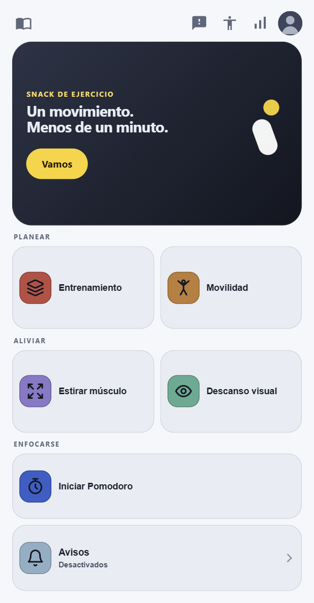
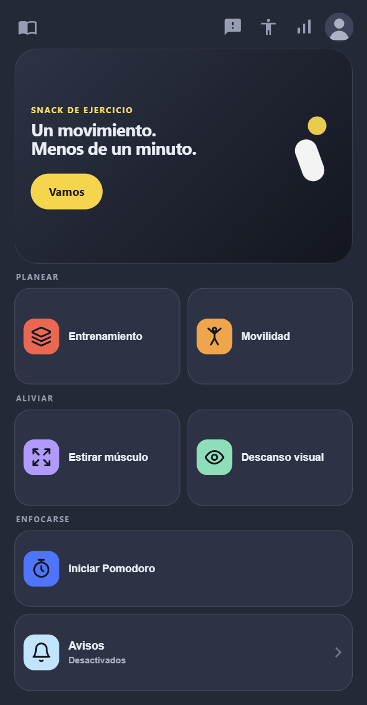
Funciones
Todo en la pantalla de inicio.
Seis formas de moverte, a un toque. Elige una para ver qué hace.
Snacks de ejercicio
Un movimiento entre reuniones, tras una ronda de concentración o mientras hierve el agua.
- Bocado: un movimiento, menos de un minuto.
- Ración: unos cinco minutos de trabajo guiado.
- A la carta: tú eliges duración, series y descanso.
- Elegido al azar para no repetirte. Cambia el ejercicio antes de empezar.
- Cada movimiento de los snacks trae una figura animada que enseña cómo hacerlo.
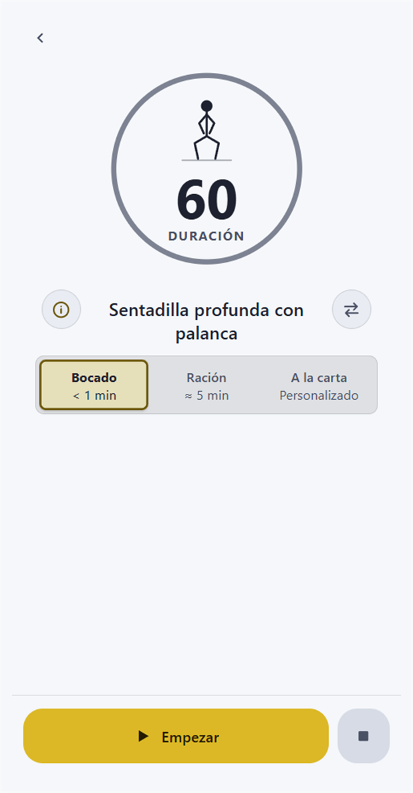
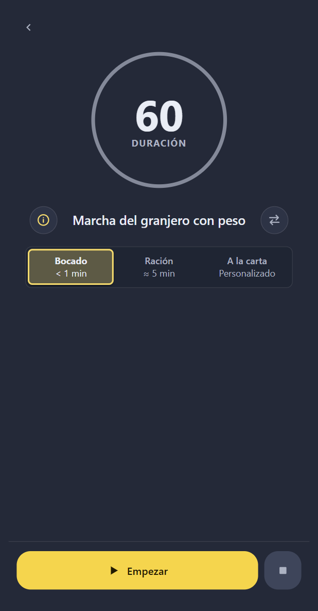
Crea tu entrenamiento
Elige la duración. IpsoFit monta el resto.
- Elige duración, zona e intensidad.
- Cuerpo completo, tren superior, tren inferior o core.
- Combina EMOM, Tabata, AMRAP, circuitos HIIT y superseries.
- Calentamiento y enfriamiento opcionales.
- Estés donde estés: solo peso corporal cuando estás fuera, o el material que tienes en casa o en el gimnasio. Dile dónde estás y solo elegirá movimientos que puedas hacer.
- Revisa el plan, cambia un movimiento o genera otro.
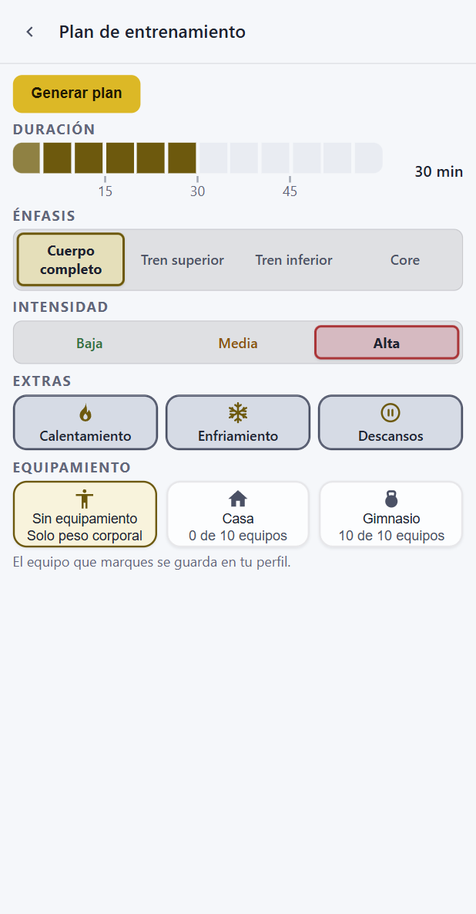
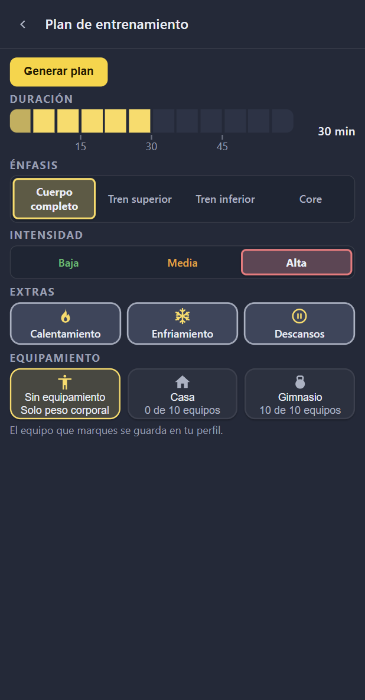
Sesiones de movilidad
Articulaciones y estiramientos, de principio a fin.
- Elige duración y zona: cuerpo completo, tren superior, tren inferior o core.
- Usa solo el material que tienes, o ninguno.
- Genera el plan y empieza la sesión.
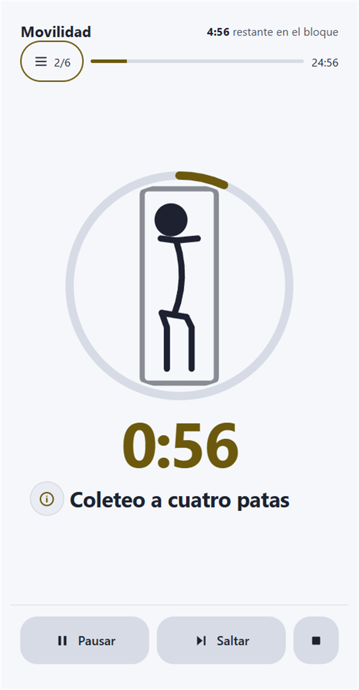
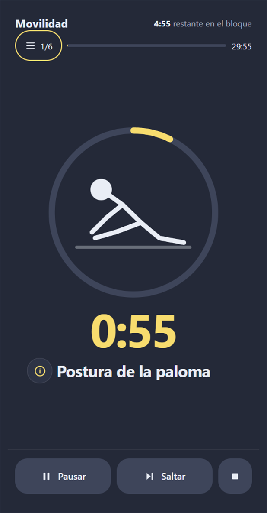
Estirar un músculo
Toca la zona que notas cargada y recibe una rutina corta para ella.
- Mapa corporal de frente y de espalda: toca el músculo que quieres estirar.
- Dos o tres movimientos pensados para ese músculo.
- Ajusta la duración y el descanso entre movimientos, o déjalos en automático.
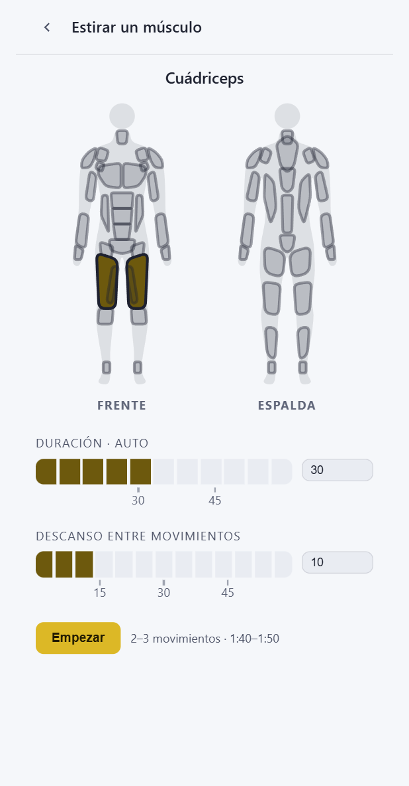
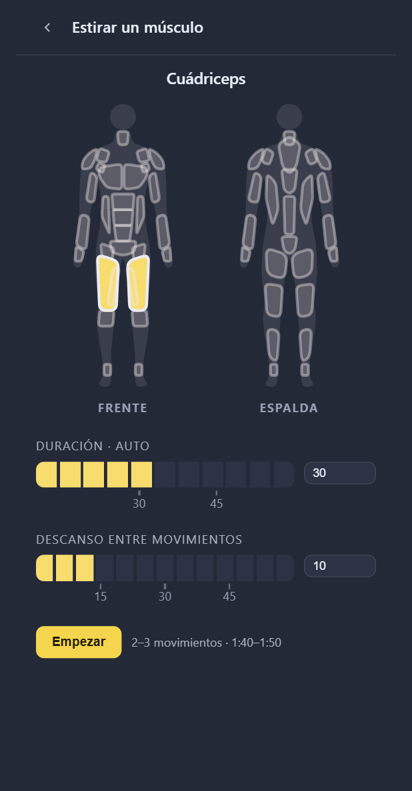
Descanso visual
Ejercicios breves para los días de mucha pantalla.
- Un bloque guiado que empiezas cuando quieras desde la pantalla de inicio.
- Movimientos como el parpadeo consciente, con una cuenta que seguir.
- Combínalo con un aviso de descanso visual para no tener que acordarte.
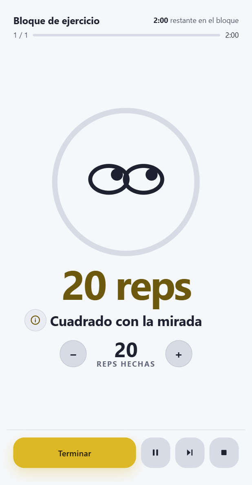
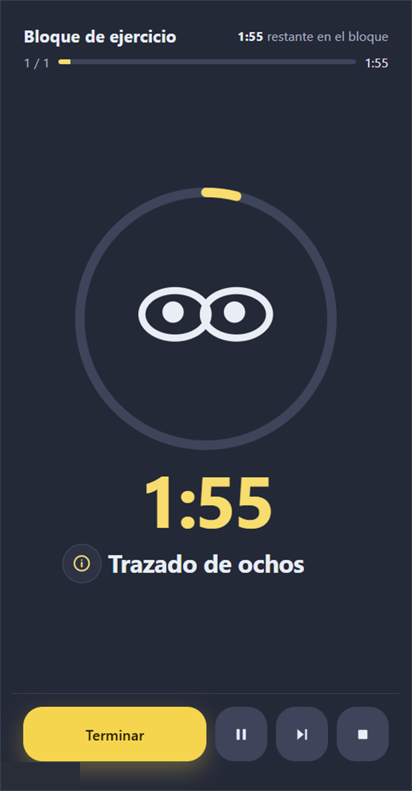
Avisos
Recordatorios para moverte y descansar la vista, a tu ritmo.
- Aviso de snack: cada pocos minutos, un aviso para levantarte y hacer un snack de ejercicio.
- Aviso de descanso visual: un recordatorio para mirar a lo lejos durante 20 segundos.
- Elige el intervalo, alinea los avisos con el reloj y pospón cuando estés liado.
- Limítalos a tu horario de trabajo si quieres.
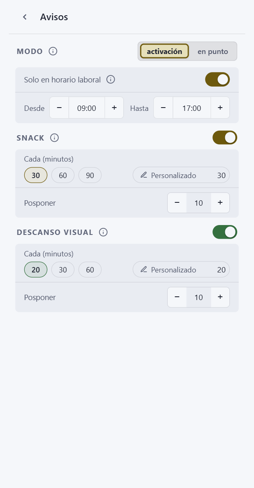
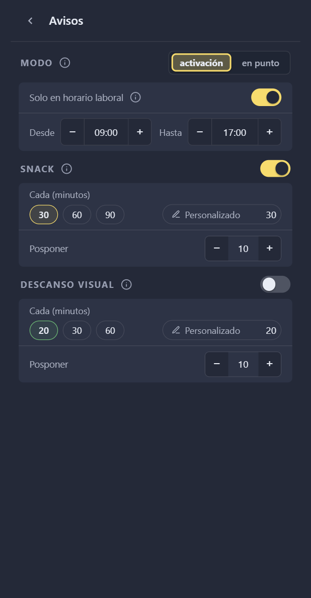
Y además
Detalles que te mantienen en movimiento.
Temporizador de concentración
Un temporizador Pomodoro integrado alterna rondas de concentración y descansos cortos. Un descanso puede acabar con un snack de ejercicio.
Estadísticas y mapa corporal
Hoy y esta semana: bloques, series, entrenamientos y los músculos que has trabajado en un mapa corporal de frente y de espalda.
Se adapta a lo que tienes
Dile a IpsoFit qué material tienes y solo elegirá movimientos que puedas hacer. Sin material, te basta con tu cuerpo: en la oficina, en un hotel o en un parque.
Copia de seguridad
Tu historial se queda en tu dispositivo. Expórtalo a una copia de seguridad y restáuralo cuando quieras.
Claro u oscuro, español o inglés
Sigue a tu sistema o elige tú el tema y el idioma.
Una biblioteca de más de 600 ejercicios
Todos los grupos musculares, del peso corporal al material de gimnasio. IpsoFit tira de todos, así que tus sesiones no se repiten.
Beta cerrada
Prueba IpsoFit antes del lanzamiento.
Escríbenos y dinos si usas Android o Windows. Para Android, envíanos la cuenta de Google que usas en Google Play para añadirte a la prueba.
Escribe a support@ipsofit.comPreguntas
Conviene saber
¿En qué dispositivos funciona IpsoFit?
En móviles Android y PC con Windows. La app está en español e inglés.
¿Dónde se guardan mis entrenamientos?
En tu dispositivo. La cuenta solo sirve para controlar el acceso durante la beta. Los detalles están en la Política de privacidad.
¿Necesito material?
No. Elige «solo peso corporal» y todos los movimientos se pueden hacer en la oficina, en un hotel o en un parque. Añade el material que tengas e IpsoFit también lo usará.
¿Cómo me uno a la beta?
Escribe a support@ipsofit.com con tu plataforma. Si usas Android, envía también la cuenta de Google que usas en Google Play.
¿IpsoFit es consejo médico?
No. IpsoFit planifica ejercicio deportivo y no conoce tu estado de salud. Lee el Aviso médico y de seguridad antes de tu primer bloque.